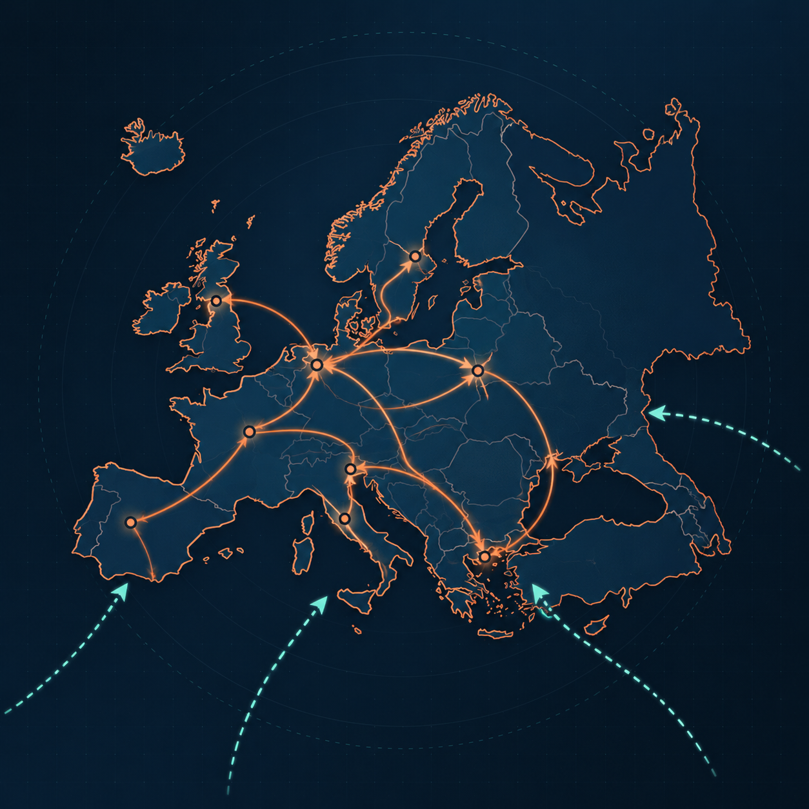

Contexto con fundamento
Datos de migración e indicadores contextuales de Eurostat, con referencias estadísticas del INE y el ISTAT.
Inteligencia migratoria · Europa
migrAI convierte datos de migración y señales contextuales en previsiones territoriales que ayudan a planificar servicios, ciudades y oportunidades con más perspectiva.

Una cadena de valor transparente
Combinamos fuentes demográficas y señales contextuales para ofrecer una lectura clara, comparable y preparada para explorar.
Datos de migración e indicadores contextuales de Eurostat, con referencias estadísticas del INE y el ISTAT.
El pipeline organiza, limpia y valida la información; trata duplicados y valores ausentes antes de generar resultados.
Explora observaciones, previsiones, horizontes e intervalos de incertidumbre desde un dashboard privado.
Pensado para anticipar necesidades
Una herramienta de análisis para explorar proyecciones y poner los cambios territoriales en contexto. No sustituye el criterio experto: lo acompaña.
Explora cómo pueden evolucionar las necesidades de vivienda, movilidad y servicios en distintos territorios.
Contrasta señales y previsiones para apoyar conversaciones sobre educación, salud e integración.
Compara niveles geográficos y horizontes para entender tendencias y plantear escenarios de trabajo.
Añade una perspectiva demográfica de largo plazo a la evaluación de mercados y activos urbanos.
Los resultados son estimaciones analíticas y deben interpretarse junto con otras fuentes y conocimiento local.
Siguiente paso